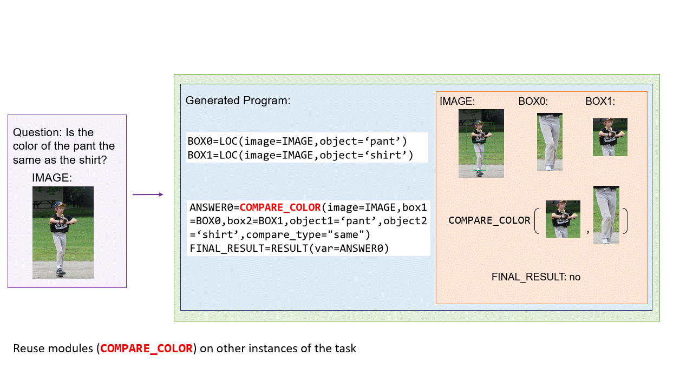
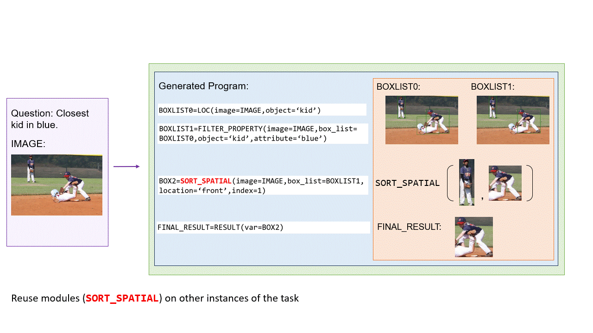
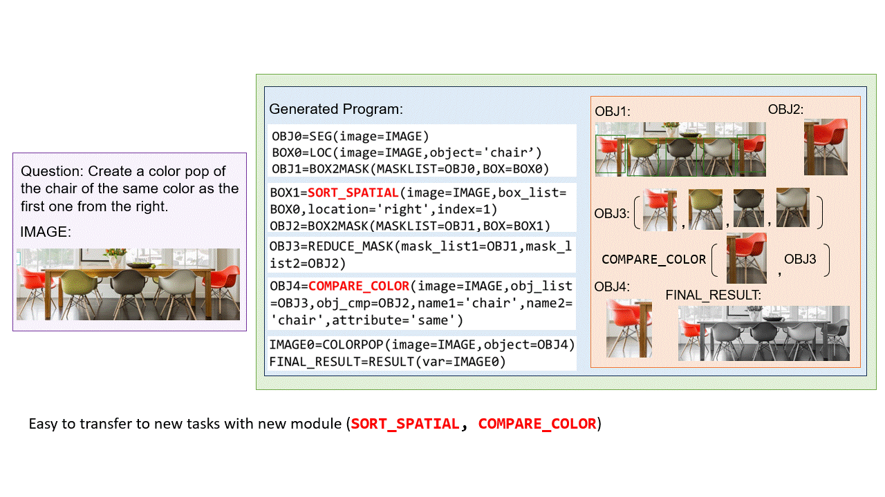
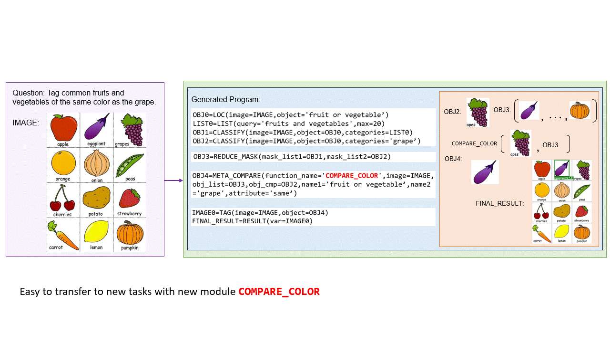
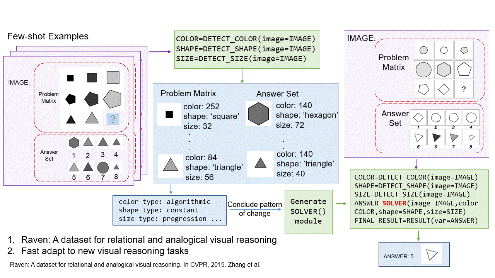
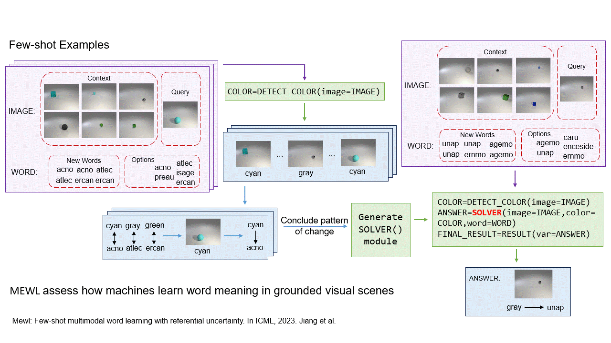

1 MIT-IBM Watson AI Lab
2 Columbia University
3 Tsinghua University
4 UCLA
5 Umass Amherst
* (Equal Contributions)
Overview
Recent works have shown that Large Language Models (LLMs) could empower traditional neuro-symbolic models via programming capabilities to translate languages into module descriptions, thus achieving strong visual reasoning results while maintaining the model’s transparency and efficiency. However, these models usually exhaustively generate the entire code snippet given each new instance of a task, which is extremely ineffective. On the contrary, human beings gradually acquire knowledge that can be reused and grow into more profound skills for fast generalization to new tasks since we are an infant. Inspired by this, we propose generative neuro-symbolic visual reasoning by growing and reusing modules. Specifically, our model consists of three unique stages, module initialization, module generation, and module execution. First, given a vision-language task, we adopt LLMs to examine whether we could reuse and grow over established modules to handle this new task. If not, we initialize a new module needed by the task and specify the inputs and outputs of this new module. After that, the new module is created by querying LLMs to generate corresponding code snippets that match the requirements. In order to get a better sense of the new module's ability, we treat few-shot training examples as test cases to see if our new module could pass these cases. If yes, the new module is added to the module library for future reuse. Finally, we evaluate the performance of our model on the testing set by executing the parsed programs with the newly made visual modules to get the results. We find the proposed GENOME model possesses several advantages. First, it performs competitively on standard tasks like visual question answering and referring expression comprehension; Second, the visual modules learned from one task can be seamlessly transferred to new tasks; Last but not least, it is able to adapt to new visual reasoning tasks by observing a few training examples and reusing modules.
How it works
Results
| 
(a) Applying GENOME for Visual Question Answering. |
| 
(b) Applying GENOME for Referring Expression Comprehension. |
| 
(c) Applying GENOME for Image Editing. |
| 
(d) Applying GENOME for Knowledge-based Object Tagging. |
| 
(e) Applying GENOME for Raven's Progressive Matrices. |
| 
(f) Applying GENOME for Few-shot Multimodal Word Learning. |
Citation
If you use this work or find it helpful, please consider citing: (bibtex)
@inproceedings{gnsvr2023,
author = {Chen, Zhenfang and Sun, Rui and Liu, Wenjun and Hong, Yining and Gan, Chuang},
title = {GENOME: Generative Neuro-Symbolic Visual Reasoning by Growing and Reusing Modules},
journal = {arXiv},
year = {2023},
}